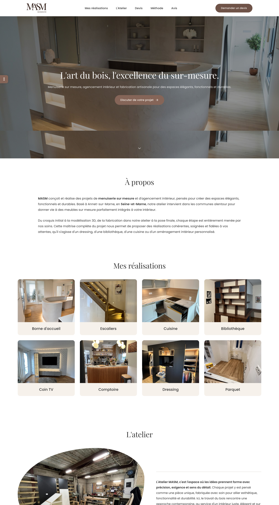
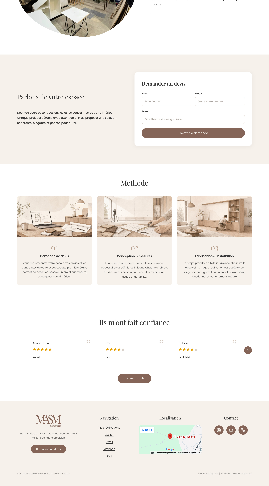

Le projet
MASM souhaitait un site vitrine à la hauteur de son savoir-faire : moderne, épuré et luxueux. L'enjeu principal était de créer une expérience fluide et inspirante, tout en guidant les visiteurs vers la prise de contact
Objectif
Développer un site vitrine qui inspire confiance et génère des demandes de devis qualifiées.
Cible
Particuliers et professionnels à la recherche de solutions d'agencement sur-mesure haut de gamme.
Contraintes
Mettre en avant les réalisations sans surcharger les pages, optimiser pour le mobile et respecter l'identité graphique.
Un artisan, une identité à créer
MASM est une entreprise artisanale de menuiserie basée en Seine-et-Marne. L'ancien site ne reflétait ni la qualité du savoir-faire ni le positionnement haut de gamme de l'entreprise.
Il fallait repartir de zéro : nouvelle identité graphique, nouveau site, nouvelle image.
Comment valoriser un savoir-faire artisanal haut de gamme à travers un site web qui inspire confiance et génère des demandes de devis ?
L'ancien site ne reflétait pas le positionnement premium de l'entreprise. Il fallait créer une identité visuelle cohérente et élégante.
Le site devait guider les visiteurs vers la prise de contact tout en mettant en avant les réalisations sans surcharger.
La majorité des visiteurs arrivent depuis mobile. L'expérience devait être pensée responsive dès la conception.
Ma démarche
De la charte graphique au site en ligne, un processus complet mené de A à Z.
Brief client
Échange avec le gérant pour cerner le positionnement, la cible et les objectifs business
Benchmark
Analyse de 5 sites concurrents (menuisiers haut de gamme) pour identifier les codes visuels du secteur
Charte graphique
Palette couleurs, typographies, logo et identité visuelle complète
Maquettes UI
Design desktop et mobile sur Figma, validé par le client avant intégration
Intégration
Développement en HTML, CSS et JavaScript, responsive et SEO-friendly
SEO & Préparation
Optimisation SEO, tests responsive et préparation à la mise en ligne


Aperçu du projet



Un projet en tête ?Discutons-en autour d'un café virtuel.